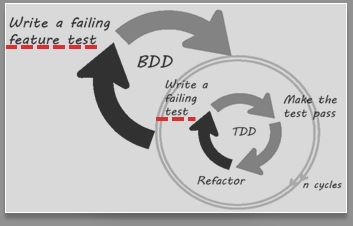

BDD하기
@Qunit
명세1-자판기
명세2-웹채팅
BDD기본흐름
참고

자판기, 웹채팅 개발을 BDD로 시작 하기
자판기 명세
테스트결과 보기
테스트 완료:
삭제:
작성중:
미작성:
웹채팅 명세
테스트결과 보기
처음 spec
테스트 완료:
삭제:
작성중:
미작성:
BDD 기본흐름
가장 먼저 명세를 작성한다.
명세를 표현할 수 있는 테스트 코드의 뼈대?만을 작성한다.
테스트를 돌려서 테스트가 실패하는 것을 확인한다. (100% 실패 확인)
테스트를 통과할 수 있는 가장 단순한 코드를 작성한다.
테스트를 돌린다. 성공하면 7번으로 넘어간다.
테스트에 실패하면 에러의 원인을 파악한다.
쉽게 해결할 수 있다면 코드를 수정해서 테스트를 돌려 확인하고, 원인 파악이 어렵다면 4번 상태로 코드를 되돌린 후 문제에 다시 접근한다.
모든 테스트가 통과한 상태에서 리팩토링을 진행한다.
명세를 리팩토링을 했다면 1번부터 반복한다.
코드를 리팩토링을 했다면 5번부터 반복한다.
참고내용
BDD/TDD
BDD 개념잡기
JavaScript TDD 배우기 - 하나
JavaScript TDD 배우기 - 둘
JavaScript TDD 배우기 - 셋
...
테스트 가능한 javascript 코드
함수지향
클로저(closure)
객체지향
...
테스트 툴
QUnit
Mocha
JUnit
Jenkins 와 테스트 툴 통합
node.js
node.js란?
콘솔에서 node.js 실행 + hello world
이클립스에서 node.js 에 websocket 쓰기
...
Bootstrap
- 웹프레임워크 중 CSS 프레임워크 성격
- 트위터 개발자 2명이 1년간 만들어서 선보임
- 부트스크랩4 는 IE9 부터 지원
- 반응형 웹 디자인 지원
- 부트스크랩:
http://getbootstrap.com/2.3.2/
기타
Sublime Text
웹프레임워크-조합
AngularJS
Maintaining Quality
인비전